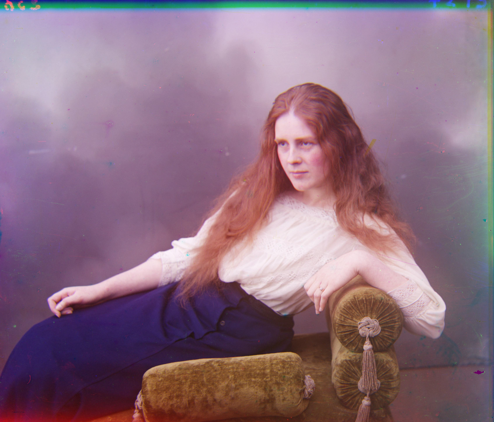
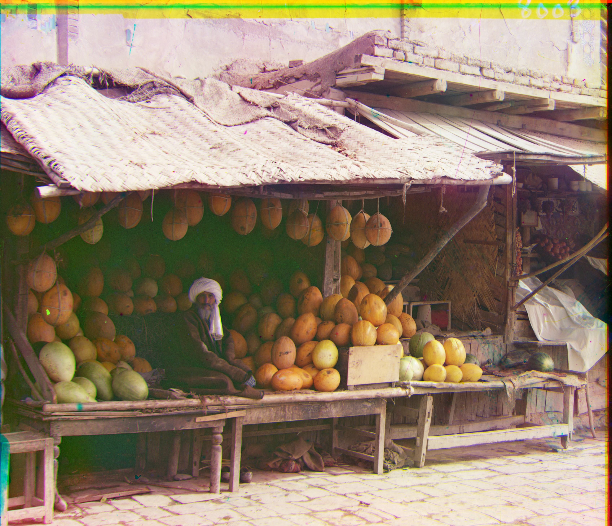
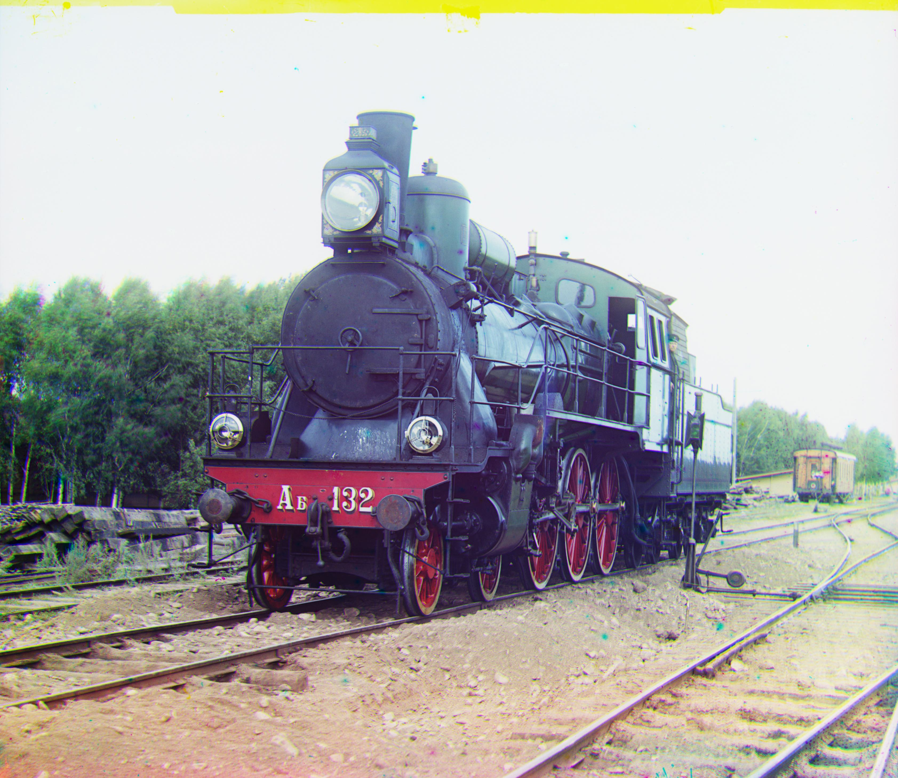

Image Alignment Results
| Original Image (3 Plates) | Aligned Image (Output) | Displacement (G, R) |
|---|---|---|
 |
 |
G: (5, 2), R: (12, 3) |
 |
G: (4, 25), R: (58, -4) | |
 |
G: (24, 49), R: (56, 104) | |
 |
G: (16, 60), R: (13, 124) | |
| G: (17, 41), R: (23, 89) | ||
|  | G: (9, 54), R: (12, 116) | |
|  | G: (11, 82), R: (13, 178) | |
 |
 |
G: (2, 3), R: (2, -3) |
 |
G: (26, 51), R: (36, 108) | |
 |
G: (-11, 33), R: (-27, 140) | |
 |
G: (29, 79), R: (37, 176) | |
 |
G: (14, 53), R: (11, 112) | |
 |
 |
G: (3, 3), R: (6, 43) |
|  | G: (32, 87), R: (43, 176) |